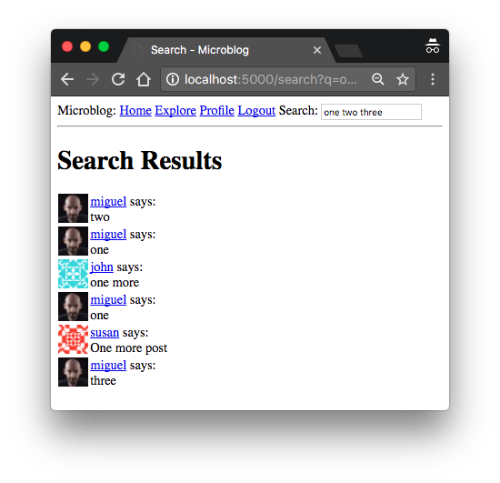

The Flask Mega-Tutorial Part XVI: Full-Text Search (2018)
Posted by
on under(Great news! There is a new version of this tutorial!)
This is the sixteenth installment of the Flask Mega-Tutorial series, in which I'm going to add a full-text search capability to Microblog.
For your reference, below is a list of the articles in this series.
- Chapter 1: Hello, World!
- Chapter 2: Templates
- Chapter 3: Web Forms
- Chapter 4: Database
- Chapter 5: User Logins
- Chapter 6: Profile Page and Avatars
- Chapter 7: Error Handling
- Chapter 8: Followers
- Chapter 9: Pagination
- Chapter 10: Email Support
- Chapter 11: Facelift
- Chapter 12: Dates and Times
- Chapter 13: I18n and L10n
- Chapter 14: Ajax
- Chapter 15: A Better Application Structure
- Chapter 16: Full-Text Search (this article)
- Chapter 17: Deployment on Linux
- Chapter 18: Deployment on Heroku
- Chapter 19: Deployment on Docker Containers
- Chapter 20: Some JavaScript Magic
- Chapter 21: User Notifications
- Chapter 22: Background Jobs
- Chapter 23: Application Programming Interfaces (APIs)
The goal of this chapter is to implement a search feature for Microblog, so that users can find interesting posts using natural language. For many types of web sites, it is possible to just let Google, Bing, etc. index all the content and provide search results through their search APIs. This works well for sites that have mostly static pages, like a forum. But in my application the basic unit of content is a user post, which is a small portion of the entire web page. The type of search results that I want are for these individual blog posts and not entire pages. For example, if I search for the word "dog" I want to see blog posts from any users that include that word. Obviously a page that shows all blog posts that have the word "dog" (or any other possible search term) does not really exist as a page that the big search engines can find and index, so clearly I have no choice other than to roll my own search feature.
The GitHub links for this chapter are: Browse, Zip, Diff.
Introduction to Full-Text Search Engines
Support for full-text search is not standardized like relational databases are. There are several open-source full-text engines: Elasticsearch, Apache Solr, Whoosh, Xapian, Sphinx, etc. As if this isn't enough choice, there are several databases that also provide searching capabilities that are comparable to dedicated search engines like the ones I enumerated above. SQLite, MySQL and PostgreSQL all offer some support for searching text, and NoSQL databases such as MongoDB and CouchDB do too.
If you are wondering which of these can work within a Flask application, the answer is all of them! That is one of the strengths of Flask, it does its job while not being opinionated. So what's the best choice?
From the list of dedicated search engines, Elasticsearch is one that stands out to me as being fairly popular, in part due to its popularity as the "E" in the ELK stack for indexing logs, along with Logstash and Kibana. Using the searching capabilities of one of the relational databases could also be a good choice, but given the fact that SQLAlchemy does not support this functionality, I would have to handle the searching with raw SQL statements, or else find a package that provides high-level access to text searches while being able to coexist with SQLAlchemy.
Based on the above analysis, I'm going to use Elasticsearch, but I'm going to implement all the text indexing and searching functions in a way that is very easy to switch to another engine. That will allow you to replace my implementation with an alternative one based on a different engine just by rewriting a few functions in a single module.
Installing Elasticsearch
There are several ways to install Elasticsearch, including one-click installers, zip file with the binaries that you need to install yourself, and even a Docker image. The documentation has an Installation page with detailed information on all these options. If you are using Linux, you will likely have a package available for your distribution. If you are using a Mac and have Homebrew installed, then you can simply run brew install elasticsearch.
Once you install Elasticsearch on your computer, you can verify that it is running by typing http://localhost:9200 in your browser's address bar, which should return some basic information about the service in JSON format.
Since I will be managing Elasticsearch from Python, I will also be using the Python client library:
(venv) $ pip install elasticsearch
You may also want to update your requirements.txt file:
(venv) $ pip freeze > requirements.txt
Elasticsearch Tutorial
I'm going to start by showing you the basics of working with Elasticsearch from a Python shell. This will help you familiarize with this service, so that you can understand the implementation that I will discuss later.
To create a connection to Elasticsearch, create an instance of class Elasticsearch, passing a connection URL as an argument:
>>> from elasticsearch import Elasticsearch
>>> es = Elasticsearch('http://localhost:9200')
Data in Elasticsearch is written to indexes. Unlike a relational database, the data is just a JSON object. The following example writes an object with a field called text to an index called my_index:
>>> es.index(index='my_index', id=1, body={'text': 'this is a test'})
For each document stored, Elasticsearch takes a unique id and a dictionary with the data to be stored.
Let's store a second document on this index:
>>> es.index(index='my_index', id=2, body={'text': 'a second test'})
And now that there are two documents in this index, I can issue a free-form search. In this example, I'm going to search for this test:
>>> es.search(index='my_index', body={'query': {'match': {'text': 'this test'}}})
The response from the es.search() call is a Python dictionary with the search results:
{
'took': 309,
'timed_out': False,
'_shards': {'total': 1, 'successful': 5, 'skipped': 0, 'failed': 0},
'hits': {
'total': {'value': 2, 'relation': 'eq'},
'max_score': 0.82713,
'hits': [
{
'_index': 'my_index',
'_type': '_doc',
'_id': '1',
'_score': 0.82713,
'_source': {'text': 'this is a test'}
},
{
'_index': 'my_index',
'_type': '_doc',
'_id': '2',
'_score': 0.1936807,
'_source': {'text': 'a second test'}
}
]
}
}
Here you can see that the search returned the two documents, each with an assigned score. The document with the highest score contains the two words I searched for, and the other document contains only one. You can see that even the best result does not have a perfect score of 1, because the words do not exactly match the text.
Now this is the result if I search for the word second:
>>> es.search(index='my_index', body={'query': {'match': {'text': 'second'}}})
{
'took': 6,
'timed_out': False,
'_shards': {'total': 1, 'successful': 1, 'skipped': 0, 'failed': 0},
'hits': {
'total': {'value': 1, 'relation': 'eq'},
'max_score': 0.7361701,
'hits': [
{
'_index': 'my_index',
'_type': '_doc',
'_id': '2',
'_score': 0.7361701,
'_source': {'text': 'a second test'}
}
]
}
}
I still get a less than perfect score because my search does not exactly match the text in this document, but since only one of the two documents contains the word "second", the other document does not show up at all.
The Elasticsearch query object has more options, all well documented, and includes options such as pagination and sorting, just like relational databases.
Feel free to add more entries to this index and try different searches. When you are done experimenting, you can delete the index with the following command:
>>> es.indices.delete(index='my_index')
Elasticsearch Configuration
Integrating Elasticsearch into the application is a great example of the power of Flask. This is a service and Python package that does not have anything to do with Flask, yet, I'm going to get a pretty good level of integration, starting from the configuration, which I'm going to write in the app.config dictionary from Flask:
config.py: Elasticsearch configuration.
class Config(object):
# ...
ELASTICSEARCH_URL = os.environ.get('ELASTICSEARCH_URL')
Like with many other configuration entries, the connection URL for Elasticsearch is going to be sourced from an environment variable. If the variable is not defined, I'm going to let the setting be set to None, and I'll use that as a signal to disable Elasticsearch. This is mainly for convenience, so that you are not forced to always have the Elasticsearch service up and running when you work on the application, and in particular when you run unit tests. So to make sure the service is used, I need to define the ELASTICSEARCH_URL environment variable, either directly in the terminal or by adding it to the .env file as follows:
ELASTICSEARCH_URL=http://localhost:9200
Elasticsearch presents the challenge that it isn't wrapped by a Flask extension. I cannot create the Elasticsearch instance in the global scope like I did in the examples above because to initialize it I need access to app.config, which only becomes available after the create_app() function is invoked. So I decided to add a elasticsearch attribute to the app instance in the application factory function:
app/__init__.py: Elasticsearch instance.
# ...
from elasticsearch import Elasticsearch
# ...
def create_app(config_class=Config):
app = Flask(__name__)
app.config.from_object(config_class)
# ...
app.elasticsearch = Elasticsearch([app.config['ELASTICSEARCH_URL']]) \
if app.config['ELASTICSEARCH_URL'] else None
# ...
Adding a new attribute to the app instance may seem a little strange, but Python objects are not strict in their structure, and new attributes can be added to them at any time. An alternative that you may also consider is to create a subclass of Flask (maybe called Microblog), with the elasticsearch attribute defined in its __init__() function.
Note how I use a conditional expression to make the Elasticsearch instance None when a URL for the Elasticsearch service wasn't defined in the environment.
A Full-Text Search Abstraction
As I said in the chapter's introduction, I want to make it easy to switch from Elasticsearch to other search engines, and I also don't want to code this feature specifically for searching blog posts, I prefer to design a solution that in the future I can easily extend to other models if I need to. For all these reasons, I decided to create an abstraction for the search functionality. The idea is to design the feature in generic terms, so I will not be assuming that the Post model is the only one that needs to be indexed, and I will also not be assuming that Elasticsearch is the index engine of choice. But if I can't make any assumptions about anything, how can I get this work done?
The first thing that I need, is to somehow find a generic way to indicate which model and which field or fields in it are to be indexed. I'm going to say that any model that needs indexing needs to define a __searchable__ class attribute that lists the fields that need to be included in the index. For the Post model, these are the changes:
app/models.py: Add a \_\_searchable\_\_ attribute to the Post model.
class Post(db.Model):
__searchable__ = ['body']
# ...
So here I'm saying that this model needs to have its body field indexed. But just to make sure this is perfectly clear, this __searchable__ attribute that I added is just a variable, it does not have any behavior associated with it. It will just help me write my indexing functions in a generic way.
I'm going to write all the code that interacts with the Elasticsearch index in a app/search.py module. The idea is to keep all the Elasticsearch code in this module. The rest of the application will use the functions in this new module to access the index and will not have direct access to Elasticsearch. This is important, because if one day I decided I don't like Elasticsearch anymore and want to switch to a different engine, all I need to do is rewrite the functions in this module, and the application will continue to work as before.
For this application, I decided that I need three supporting functions related to text indexing: I need to add entries to a full-text index, I need to remove entries from the index (assuming one day I will support deleting blog posts), and I need to execute a search query. Here is the app/search.py module that implements these three functions for Elasticsearch, using the functionality I showed you above from the Python console:
app/search.py: Search functions.
from flask import current_app
def add_to_index(index, model):
if not current_app.elasticsearch:
return
payload = {}
for field in model.__searchable__:
payload[field] = getattr(model, field)
current_app.elasticsearch.index(index=index, id=model.id, body=payload)
def remove_from_index(index, model):
if not current_app.elasticsearch:
return
current_app.elasticsearch.delete(index=index, id=model.id)
def query_index(index, query, page, per_page):
if not current_app.elasticsearch:
return [], 0
search = current_app.elasticsearch.search(
index=index,
body={'query': {'multi_match': {'query': query, 'fields': ['*']}},
'from': (page - 1) * per_page, 'size': per_page})
ids = [int(hit['_id']) for hit in search['hits']['hits']]
return ids, search['hits']['total']['value']
These functions all start by checking if app.elasticsearch is None, and in that case return without doing anything. This is so that when the Elasticsearch server isn't configured, the application continues to run without the search capability and without giving any errors. This is just as a matter of convenience during development or when running unit tests.
The functions accept the index name as an argument. In all the calls I'm passing down to Elasticsearch, I'm using this name as the index name and also as the document type, as I did in the Python console examples.
The functions that add and remove entries from the index take the SQLAlchemy model as a second argument. The add_to_index() function uses the __searchable__ class variable I added to the model to build the document that is inserted into the index. If you recall, Elasticsearch documents also needed a unique identifier. For that I'm using the id field of the SQLAlchemy model, which is also conveniently unique. Using the same id value for SQLAlchemy and Elasticsearch is very useful when running the searches, as it allows me to link entries in the two databases. Something I did not mention above is that if you attempt to add an entry with an existing id, then Elasticsearch replaces the old entry with the new one, so add_to_index() can be used for new objects as well as for modified ones.
I did not show you the es.delete() function that I'm using in remove_from_index() before. This function deletes the document stored under the given id. Here is a good example of the convenience of using the same id to link entries in both databases.
The query_index() function takes the index name and a text to search for, along with pagination controls, so that search results can be paginated like Flask-SQLAlchemy results are. You have already seen an example usage of the es.search() function from the Python console. The call I'm issuing here is fairly similar, but instead of using a match query type, I decided to use multi_match, which can search across multiple fields. By passing a field name of *, I'm telling Elasticsearch to look in all the fields, so basically I'm searching the entire index. This is useful to make this function generic, since different models can have different field names in the index.
The body argument to es.search() includes pagination arguments in addition to the query itself. The from and size arguments control what subset of the entire result set needs to be returned. Elasticsearch does not provide a nice Pagination object like the one from Flask-SQLAlchemy, so I have to do the pagination math to calculate the from value.
The return statement in the query_index() function is somewhat complex. It returns two values: the first is a list of id elements for the search results, and the second is the total number of results. Both are obtained from the Python dictionary returned by the es.search() function. If you are not familiar with the expression that I'm using to obtain the list of IDs, this is called a list comprehension, and is a fantastic feature of the Python language that allows you to transform lists from one format to another. In this case I'm using the list comprehension to extract the id values from the much larger list of results provided by Elasticsearch.
Is this too confusing? Maybe a demonstration of these functions from the Python console can help you understand them a bit more. In the following session, I manually add all the posts from the database to the Elasticsearch index. In my test database, I had a few posts that had the numbers "one", "two", "three", "four" and "five" in them, so I used that as a search query. You may need to adapt your query to match the contents of your database:
>>> from app.search import add_to_index, remove_from_index, query_index
>>> for post in Post.query.all():
... add_to_index('posts', post)
>>> query_index('posts', 'one two three four five', 1, 100)
([15, 13, 12, 4, 11, 8, 14], 7)
>>> query_index('posts', 'one two three four five', 1, 3)
([15, 13, 12], 7)
>>> query_index('posts', 'one two three four five', 2, 3)
([4, 11, 8], 7)
>>> query_index('posts', 'one two three four five', 3, 3)
([14], 7)
The query that I issued returned seven results. When I asked for page 1 with 100 items per page I get all seven, but then the next three examples shows how I can paginate the results in a way that is very similar to what I did for Flask-SQLAlchemy, with the exception that the results come as a list of IDs instead of SQLAlchemy objects.
If you want to keep things clean, delete the posts index after you are doing experimenting with it:
>>> app.elasticsearch.indices.delete('posts')
Integrating Searches with SQLAlchemy
The solution that I showed you in the previous section is decent, but it still has a couple of problems. The most obvious problem is that results come as a list of numeric IDs. This is highly inconvenient, I need SQLAlchemy models so that I can pass them down to templates for rendering, and I need a way to replace that list of numbers with the corresponding models from the database. The second problem is that this solution requires the application to explicitly issue indexing calls as posts are added or removed, which is not terrible, but less than ideal, since a bug that causes a missed indexing call when making a change on the SQLAlchemy side is not going to be easily detected, the two databases will get out of sync more and more each time the bug occurs and you will probably not notice for a while. A better solution would be for these calls to be triggered automatically as changes are made on the SQLAlchemy database.
The problem of replacing the IDs with objects can be addressed by creating a SQLAlchemy query that reads those objects from the database. This sounds easy in practice, but doing it efficiently with a single query is actually a bit tricky to implement.
For the problem of triggering the indexing changes automatically, I decided to drive updates to the Elasticsearch index from SQLAlchemy events. SQLAlchemy provides a large list of events that applications can be notified about. For example, each time a session is committed, I can have a function in the application invoked by SQLAlchemy, and in that function I can apply the same updates that were made on the SQLAlchemy session to the Elasticsearch index.
To implement the solutions to these two problems I'm going to write a mixin class. Remember mixin classes? In Chapter 5, I added the UserMixin class from Flask-Login to the User model, to give it some features that were required by Flask-Login. For the search support I'm going to define my own SearchableMixin class, that when attached to a model, will give it the ability to automatically manage an associated full-text index. The mixin class will act as a "glue" layer between the SQLAlchemy and Elasticsearch worlds, providing solutions to the two problems I stated above.
Let me show you the implementation, then I'll go over some interesting details. Note that this makes use of several advanced techniques, so you will need to study this code carefully to fully understand it.
app/models.py: SearchableMixin class.
from app.search import add_to_index, remove_from_index, query_index
class SearchableMixin(object):
@classmethod
def search(cls, expression, page, per_page):
ids, total = query_index(cls.__tablename__, expression, page, per_page)
if total == 0:
return cls.query.filter_by(id=0), 0
when = []
for i in range(len(ids)):
when.append((ids[i], i))
return cls.query.filter(cls.id.in_(ids)).order_by(
db.case(when, value=cls.id)), total
@classmethod
def before_commit(cls, session):
session._changes = {
'add': list(session.new),
'update': list(session.dirty),
'delete': list(session.deleted)
}
@classmethod
def after_commit(cls, session):
for obj in session._changes['add']:
if isinstance(obj, SearchableMixin):
add_to_index(obj.__tablename__, obj)
for obj in session._changes['update']:
if isinstance(obj, SearchableMixin):
add_to_index(obj.__tablename__, obj)
for obj in session._changes['delete']:
if isinstance(obj, SearchableMixin):
remove_from_index(obj.__tablename__, obj)
session._changes = None
@classmethod
def reindex(cls):
for obj in cls.query:
add_to_index(cls.__tablename__, obj)
db.event.listen(db.session, 'before_commit', SearchableMixin.before_commit)
db.event.listen(db.session, 'after_commit', SearchableMixin.after_commit)
There are four functions in this mixin class, all class methods. Just as a refresher, a class method is a special method that is associated with the class and not a particular instance. Note how I renamed the self argument used in regular instance methods to cls, to make it clear that this method receives a class and not an instance as its first argument. Once attached to the Post model for example, the search() method above would be invoked as Post.search(), without having to have an actual instance of class Post.
The search() class method wraps the query_index() function from app/search.py to replace the list of object IDs with actual objects. You can see that the first thing this function does is call query_index(), passing cls.__tablename__ as the index name. This is going to be a convention, all indexes will be named with the name Flask-SQLAlchemy assigned to the relational table. The function returns the list of result IDs, and the total number of results. The SQLAlchemy query that retrieves the list of objects by their IDs is based on a CASE statement from the SQL language, which needs to be used to ensure that the results from the database come in the same order as the IDs are given. This is important because the Elasticsearch query returns results sorted from more to less relevant. If you want to learn more about the way this query works, you can consult the accepted answer to this StackOverflow question. The search() function returns the query that replaces the list of IDs, and also passes through the total number of search results as a second return value.
The before_commit() and after_commit() methods are going to respond to two events from SQLAlchemy, which are triggered before and after a commit takes place respectively. The before handler is useful because the session hasn't been committed yet, so I can look at it and figure out what objects are going to be added, modified and deleted, available as session.new, session.dirty and session.deleted respectively. These objects are not going to be available anymore after the session is committed, so I need to save them before the commit takes place. I'm using a session._changes dictionary to write these objects in a place that is going to survive the session commit, because as soon as the session is committed I will be using them to update the Elasticsearch index.
When the after_commit() handler is invoked, the session has been successfully committed, so this is the proper time to make changes on the Elasticsearch side. The session object has the _changes variable that I added in before_commit(), so now I can iterate over the added, modified and deleted objects, and make the corresponding calls to the indexing functions in app/search.py for the objects that have the SearchableMixin class.
The reindex() class method is a simple helper method that you can use to refresh an index with all the data from the relational side. You saw me do something similar from the Python shell session above to do an initial load of all the posts into a test index. With this method in place, I can issue Post.reindex() to add all the posts in the database to the search index.
After the class definition I made two calls to SQLALchemy's function db.event.listen(). Note that these calls are not inside the class, but after it. The purpose of these two statements is to set up the event handlers that will make SQLAlchemy call the before_commit() and after_commit() methods before and after each commit respectively.
To incorporate the SearchableMixin class into the Post model I have to add it as a subclass, and I also need to hook up the before and after commit events:
app/models.py: Adding the SearchableMixin class to the Post model.
class Post(SearchableMixin, db.Model):
# ...
Now the Post model is automatically maintaining a full-text search index for posts. I can use the reindex() method to initialize the index from all the posts currently in the database:
>>> Post.reindex()
And I can search posts working with SQLAlchemy models by running Post.search(). In the following example, I ask for the first page of five elements for my query:
>>> query, total = Post.search('one two three four five', 1, 5)
>>> total
7
>>> query.all()
[<Post five>, <Post two>, <Post one>, <Post one more>, <Post one>]
Search Form
This was very intense. The work that I've done above to keep things generic touches on several advanced topics, so it may take you time to fully understand it. But now I have a complete system to work with natural language searches for blog posts. What I need to do now is integrate all this functionality with the application.
A fairly standard approach for web-based searches is to have the search term as a q argument in the query string of the URL. For example, if you wanted to search for Python on Google, and you want to save a couple of seconds, you can just type the following URL in your browser's address bar to go directly to the results:
https://www.google.com/search?q=python
Allowing searches to be completely encapsulated in a URL is nice, because these can be shared with other people, who just by clicking on the link have access to the search results.
This introduces a change in the way I showed you to handle web forms in the past. I have used POST requests to submit form data for all the forms the application has so far, but to implement searches as above, the form submission will have to go as a GET request, which is the request method that is used when you type a URL in your browser or click a link. Another interesting difference is that the search form is going to be in the navigation bar, so it needs to be present in all pages of the application.
Here is the search form class, with just the q text field:
app/main/forms.py: Search form.
from flask import request
class SearchForm(FlaskForm):
q = StringField(_l('Search'), validators=[DataRequired()])
def __init__(self, *args, **kwargs):
if 'formdata' not in kwargs:
kwargs['formdata'] = request.args
if 'meta' not in kwargs:
kwargs['meta'] = {'csrf': False}
super(SearchForm, self).__init__(*args, **kwargs)
The q field does not require any explanation, as it is similar to other text fields I've used in the past. For this form, I decided not to have a submit button. For a form that has a text field, the browser will submit the form when you press Enter with the focus on the field, so a button is not needed. I have also added a __init__ constructor function, which provides values for the formdata and meta arguments if they are not provided by the caller. The formdata argument determines from where Flask-WTF gets form submissions. The default is to use request.form, which is where Flask puts form values that are submitted via POST request. Forms that are submitted via GET request have the field values in the query string, so I need to point Flask-WTF at request.args, which is where Flask writes the query string arguments. And as you remember, forms have CSRF protection added by default, with the inclusion of a CSRF token that is added to the form via the form.hidden_tag() construct in templates. For clickable search links to work, CSRF needs to be disabled, so I'm setting meta to {'csrf': False} so that Flask-WTF knows that it needs to bypass CSRF validation for this form.
Since I'm going to need to have this form visible in all pages, I need to create an instance of the SearchForm class regardless of the page the user is viewing. The only requirement is that the user is logged in, because for anonymous users I am not currently showing any content. Instead of creating a form object in every route, and then passing the form to all the templates, I'm going to show you a very useful trick that eliminates duplication of code when you need to implement a feature across the entire application. I already used a before_request handler before, back in Chapter 6, to record the time of last visit for each user. What I'm going to do is create my search form in that same function, but with a twist:
app/main/routes.py: Instantiate the search form in the before\_request handler.
from flask import g
from app.main.forms import SearchForm
@bp.before_app_request
def before_request():
if current_user.is_authenticated:
current_user.last_seen = datetime.utcnow()
db.session.commit()
g.search_form = SearchForm()
g.locale = str(get_locale())
Here I create an instance of the search form class when I have an authenticated user. But of course, I need this form object to persist until it can be rendered at the end of the request, so I need to store it somewhere. That somewhere is going to be the g container, provided by Flask. This g variable provided by Flask is a place where the application can store data that needs to persist through the life of a request. Here I'm storing the form in g.search_form, so then when the before request handler ends and Flask invokes the view function that handles the requested URL, the g object is going to be the same, and will still have the form attached to it. It's important to note that this g variable is specific to each request and each client, so even if your web server is handling multiple requests at a time for different clients, you can still rely on g to work as private storage for each request, independently of what goes on in other requests that are handled concurrently.
The next step is to render the form to the page. I said above that I wanted this form in all pages, so what makes more sense is to render it as part of the navigation bar. This is, in fact, simple, because templates can also see the data stored in the g variable, so I don't need to worry about adding the form as an explicit template argument in all the render_template() calls in the application. Here is how I can render the form in the base template:
app/templates/base.html: Render the search form in the navigation bar.
...
<div class="collapse navbar-collapse" id="bs-example-navbar-collapse-1">
<ul class="nav navbar-nav">
... home and explore links ...
</ul>
{% if g.search_form %}
<form class="navbar-form navbar-left" method="get"
action="{{ url_for('main.search') }}">
<div class="form-group">
{{ g.search_form.q(size=20, class='form-control',
placeholder=g.search_form.q.label.text) }}
</div>
</form>
{% endif %}
...
The form is rendered only if g.search_form is defined. This check is necessary because some pages, such as error pages, may not have it defined. This form is slightly different than the ones I did previously. I'm setting its method attribute to get, because I want the form data to be submitted on the query string with a GET request. Also, the other forms I created had the action attribute empty, because they were submitted to the same page that rendered the form. This form is special because it appears in all pages, so I need to tell it explicitly where it needs to be submitted, which is a new route that is specifically dedicated to handling searches.
Search View Function
The last bit of functionality to complete the search feature is the view function that receives the search form submission. This view function is going to be attached to the /search route, so that you can send a search request with a http://localhost:5000/search?q=search-words, just like Google.
app/main/routes.py: Search view function.
@bp.route('/search')
@login_required
def search():
if not g.search_form.validate():
return redirect(url_for('main.explore'))
page = request.args.get('page', 1, type=int)
posts, total = Post.search(g.search_form.q.data, page,
current_app.config['POSTS_PER_PAGE'])
next_url = url_for('main.search', q=g.search_form.q.data, page=page + 1) \
if total > page * current_app.config['POSTS_PER_PAGE'] else None
prev_url = url_for('main.search', q=g.search_form.q.data, page=page - 1) \
if page > 1 else None
return render_template('search.html', title=_('Search'), posts=posts,
next_url=next_url, prev_url=prev_url)
You have seen that in the other forms I used the form.validate_on_submit() method to check if the form submission was valid. Unfortunately that method only works for forms submitted via POST request, so for this form I need to use form.validate() which just validates field values, without checking how the data was submitted. If the validation fails, it is because the user submitted an empty search form, so in that case I just redirect to the explore page, which shows all blog posts.
The Post.search() method from my SearchableMixin class is used to obtain the list of search results. The pagination is handled in a very similar way to that of the index and explore pages, but generating the next and previous links is a little bit trickier without the help of the Pagination object from Flask-SQLAlchemy. This is where the total number of results passed as a second return value from Post.search() is useful.
Once the page of search results and pagination links are calculated, all that is left is to render a template with all this data. I could have figured out a way to reuse the index.html template to display search results, but given that there are a few differences I decided to create a dedicated search.html template that is dedicated to show search results, taking advantage of the _post.html sub-template to render the search results:
app/templates/search.html: Search results template.
{% extends "base.html" %}
{% block app_content %}
<h1>{{ _('Search Results') }}</h1>
{% for post in posts %}
{% include '_post.html' %}
{% endfor %}
<nav aria-label="...">
<ul class="pager">
<li class="previous{% if not prev_url %} disabled{% endif %}">
<a href="{{ prev_url or '#' }}">
<span aria-hidden="true">←</span>
{{ _('Previous results') }}
</a>
</li>
<li class="next{% if not next_url %} disabled{% endif %}">
<a href="{{ next_url or '#' }}">
{{ _('Next results') }}
<span aria-hidden="true">→</span>
</a>
</li>
</ul>
</nav>
{% endblock %}
If the rendering logic for the previous and next links gets a bit confusing it might help to review the Bootstrap documentation for the pagination component.

What do you think? This was an intense chapter, where I presented some fairly advanced techniques. Some of the concepts in this chapter may take some time to sink in. The most important take away from this chapter is that if you want to use a different search engine than Elasticsearch, all you need to do is re-implement the three functions in app/search.py. The other important benefit of going through this effort is that in the future, if I need to add search support for a different database model, I can simply do so by adding the SearchableMixin class to it, the __searchable__ attribute with the list of fields to index and the SQLAlchemy event handler connections. I think it was well worth the effort, because from now on, it is going to be easy to deal with full-text indexes.
Become a Patron!
Hello, and thank you for visiting my blog! If you enjoyed this article, please consider supporting my work on this blog on Patreon!

-
#251 Artur said
Why a variable called 'searchable'? I mean why a name with that double underscore prefix and suffix, not just a 'searchable' variable?
I suppose this is because of some convention or 'name mangling', but as I've been searching through web, 'dunder' before and after functions or variables are reserved for a magic methods. They said to avoid it using it, so at this point I don't quite understand this.
-
#252 Miguel Grinberg said
@Artur: In this case the underscores are used to flag this variable as internal. Without that SQLAlchemy would think it is a column definition.
-
#253 Derek said
How does SQLAlchemy know to use elasticsearch (or the commands given in
search.py)? My understanding is that it needs a URL prefixed with the SQLAlchemy dialect to be passed in toSQLALCHEMY_DATABASE_URI. -
#254 Miguel Grinberg said
@Derek: SQLAlchemy does not use Elasticsearch. The functionality is built in this chapter. It is integrated with SQLAlchemy through event listeners.
-
#255 Hantong said
Hi Miguel,
thank you very much for your post! It's really helpful!
I have a few questions of this chapter:
1. I got this ('get_locale' is not defined) error. How shall we define it?
2. Maybe we are using different versions of wtforms. In my Stringfiled, there is no need for "_l".
3. After searching the posts, I assume I can also use paginate() method to have more info about how many pages we get in total.
Thank you! -
#256 Miguel Grinberg said
@Hantong: 1) the
get_locale()function comes from the Flask-Babel extension
2) There is never a "need" to use the_l()function. You use it to get translations. Also related to Flask-Babel.
3) thepaginate()function is for database queries, so it won't work with full-text search. Use pagination options inPost.search()instead. -
#257 Hantong Liu said
Thank you for your reply Miguel!
I removed get_locale() line, it still works totally fine. So I'm not so sure what's purpose of using it. Maybe for multi-languages?
I used Post.search().paginate(). I think paginate() is just function to handle a list of for example, Posts. I don't quite understand that does it mean whenever we go to another page of Post, it needs to search the whole Post again? Then it might be quite slow to change pages.
Thank you for your patience! -
#258 Miguel Grinberg said
@Hantong: as I said before, the locale functions are part of the multi-language feature. If you don't need to use multiple languages you don't need that code.
As I said before, the pagination needs to happen at the Elasticsearch level, not at the SQLAlchemy level. The search() function has pagination controls, those are the ones you need to use to paginate full-text queries. -
#259 Joshua said
Whenever I make a search query, it returns an empty list. Is this something to do with elastic search regarding the fact that I only have 2gb space or I might be missing something in my code?
-
#260 Miguel Grinberg said
@Joshua: did you add anything to your Elasticsearch index? 2GB of space might be a bit low, but I think it should work for a small database.
-
#261 Orrett said
As always Miguel, great tutorial. I did notice a little issue when I was implementing the above code. If Elasticsearch should become unavailable at any point, writes to the database fail for the db models that have imported the SearchableMixin. To rectify this error, I have implemented simple try/except logic which seems to be working.
-
#262 SQ said
Hello, thanks for your informative and detailed tutorial. However, I am currently facing a problem when installing elasticsearch. I am using Ubuntu subsystem in Windows OS. When I followed this page https://www.elastic.co/guide/en/elasticsearch/reference/current/deb.html to install elasticsearch, I faced this error:
System has not been booted with systemd as init system (PID 1). Can't operate.
Failed to connect to bus: Host is down.May I know what can I do to proceed?
-
#263 Miguel Grinberg said
SQ: it appears this is an issue that a lot of people are experiencing when using WSL 2 (see https://github.com/MicrosoftDocs/WSL/issues/457). The only suggestions I can make is that you try the generic Linux or Windows installation instructions instead.
-
#264 Hassan said
Hello, there Mr. Miguel, on any recent linux distribution where services are managed by systemd, wouldn't be wise to check if the service for elasticsearch is running before setting the environment variable in .env. If the elasticsearch service is not running and you set the environment in the .env file, this will end by an exception when the app is running in debug mode. Don't you think one should check if the elasticsearch service is running via a function in config.py and if not to raise a RuntimeError?
-
#265 Ram said
Hi
When I try to query the search in the CLI, i get this: [], 0. Seems like the Elasticsearch is not configured. How can I do that to work?
-
#266 Miguel Grinberg said
@Ram: are you running the Elasticsearch service on your computer?
-
#267 Miguel Grinberg said
@Hassan: normally it is the other way around. You decide on what configuration you'd like to use and set the environment variables to reflect that. Why would you set the environment variable if you do not intend to run the Elasticsearch service?
-
#268 patrick said
Hi miguel,
I don't know if you are still answering questions for this, it was a little while ago now, but if you are, could you just answer a quick question?
When we run elasticsearch, how can we configure it to run on the command flask run, rather than having to manually open another terminal window and start it up?
Also, I foolishly duplicated and then renamed my project folder before blueprinting as "microblog_blueprinted", which led to some horrible stuff happening with venv (as it was still calling its requirements from the old "microblog" folder in the same Documents directory, meaning that it was using all the requirements and stuff from the old one.
What should I do to change this back? -
#269 Miguel Grinberg said
@patrick: Elasticsearch is a different application than your Flask server, it would be extremely unusual to have both start from a single command. This is the same as your regular database, which is also started separately from the Flask server, or Redis, which you will use later in this tutorial.
-
#270 Thomas said
Hey miguel, great blog and it's really helped me out!
At the moment when we load the search page, if there are no results, there is not anything to tell the user this. How can we implement a way to test if there are no results – I tried :
{% if posts %}
<h1>search results stuff</h1>{% else %}
No results! Check your spelling and try again.
{% endif %}
But because the posts variable was still being passed to the template, it didn't know that there was nothing in it.
{% if len(posts)<0 %} does not work, and nor does {% if posts is not None %}How can this be done?
Thanks!
-
#271 Miguel Grinberg said
@Thomas: if the
totalvariable, which has the number of results, is zero, you can passposts=Noneinstead ofposts=posts. Then your template will do the right thing, I think. -
#272 penrudee said
@Miguel, thanks for this tutorial,I have come across this issue in this chapter:
(venv) λ python
Python 3.7.8 (tags/v3.7.8:4b47a5b6ba, Jun 28 2020, 10:03:53) [MSC v.1916 64 bit (AMD64)] on win32
Type "help", "copyright", "credits" or "license" for more information.from app.models import Product2
from app.search import add_to_index, remove_from_index, query_index
for post in Product2.query.all():
... add_to_index('posts',post)
...
Traceback (most recent call last):
File "<stdin>", line 2, in <module>
File "c:\Users\bbird\flask13\app\search.py", line 4, in add_to_index
if not current_app.elasticsearch:
File "c:\Users\bbird\flask13\venv\lib\site-packages\werkzeug\local.py", line 347, in getattr
return getattr(self._get_current_object(), name)
File "c:\Users\bbird\flask13\venv\lib\site-packages\werkzeug\local.py", line 306, in _get_current_object
return self.__local()
File "c:\Users\bbird\flask13\venv\lib\site-packages\flask\globals.py", line 52, in _find_app
raise RuntimeError(_app_ctx_err_msg)
RuntimeError: Working outside of application context.This typically means that you attempted to use functionality that needed
to interface with the current application object in some way. To solve
this, set up an application context with app.app_context(). See the
documentation for more information. -
#273 Miguel Grinberg said
@penrudee: try using the "flask shell` command to start your session. The normal Python shell does not load an application context.
-
#274 penrudee said
I learn from you alot ,thank you so much.But i can't do
from app.search import add_to_index
for p in Product2.query.all():
... add_to_index('ps',p)i got error all time
Traceback (most recent call last):
File "<console>", line 2, in <module>
File "c:\Users\bbird\flask13\app\search.py", line 4, in add_to_index
if not current_app.elasticsearch:
File "c:\users\bbird\flask13\venv\lib\site-packages\werkzeug\local.py", line 347, in getattr
return getattr(self._get_current_object(), name)
AttributeError: 'Flask' object has no attribute 'elasticsearch'Help me please.
-
#275 Miguel Grinberg said
@penrudee: a working version of the code in this chapter is available. See the GitHub links at the top. This error suggests you missed the initialization of the elasticsearch client. Compare your code against mine to find the mistake.